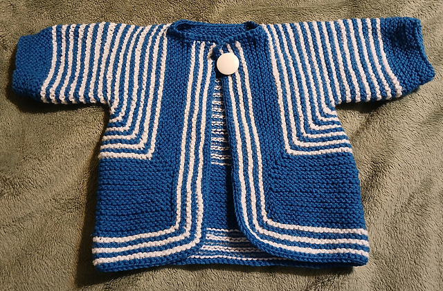
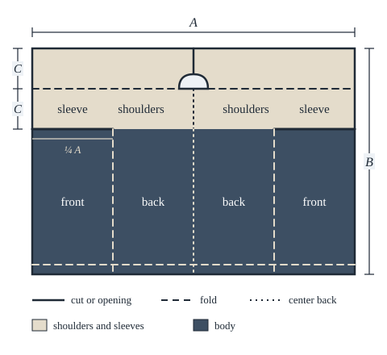
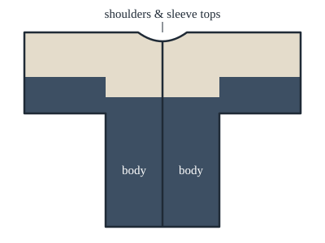
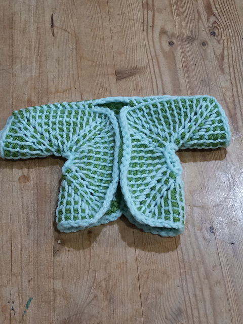
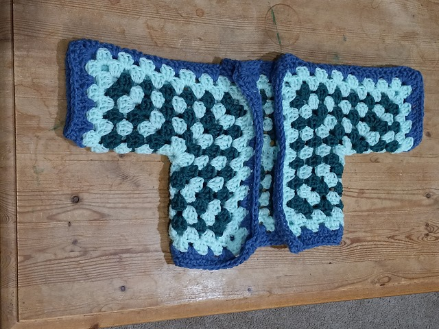

The mosaic colorwork technique for yarncrafts produces intricate multi-colored designs resembling tile mosaics. Unlike other colorwork methods, they require only one color of yarn per row. Mosaic charts can be used across multiple crafts such as knitting and crochet. Patterns must meet special stitch placement constraints. Few tools exist for creating compliant charts. Manual design is tedious and error-prone.
MoYa is a browser-based application to assist yarncrafters in creating mosaic patterns. It offers a combination of craft-aligned guided freehand drawing and image-based algorithms. Continuous chart validation provides immediate feedback for resolution of non-compliant designs. Chart markup adds craft- and user-specific fabrication details.
Try MoYa here!
The Surprise Jacket is knit flat in one piece of garter stitch. Off the needles it is an odd, unrecognizable shape, until it is folded, origami-style, into a jacket and only the two shoulder seams are sewn. Carefully placed increases and decreases make the fold work.

Even simpler than the Surprise Jacket: essentially a garter-stitch square, with stitches set aside for the armholes and neck, then folded at key points and joined.
I haven't made a Bog Jacket yet, so the diagrams below are for illustration.


The whole jacket is one huge "circle," worked around and around itself. It is named for the ouroboros, a snake biting its own tail. With Debbie New's keep-going-until-it's-big-enough construction, it works at any gauge and in any yarn. Her original is knitted; my samples translate the construction into Tunisian crochet and into granny stitch.


This crocheted lace cardigan is built from hexagons. A six-petal pineapple motif makes one full hexagon for the back, and the same hexagon is cut in half to form the left and right fronts. The garment's shape comes entirely from the geometry of a single motif.
My version is worked in granny stitch.